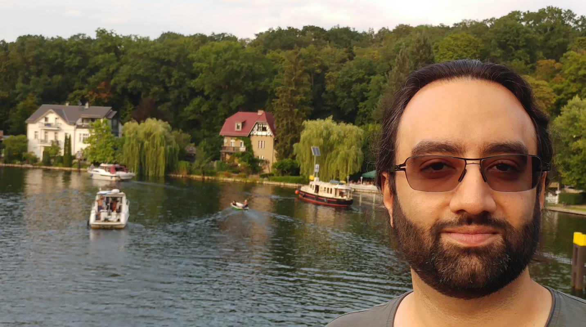

|  |

|
|
|
Postdoctoral Research Associate Artificial Intelligence for the Sciences Group Freie Universität Berlin PhD in Computational Nanotechnology Institute for Nanoscience and Nanotechnology (INST) Sharif University of Technology BSc & MSc in Mechanical Engineering Department of Mechanical Engineering Sharif University of Technology |
||
|
Email mohsen.sadeghi [at] fu-berlin.de |
||
Bio
I am a computational biophysicist, interested in modeling biomembranes and their interaction with proteins, to model biological processes such as endocytosis.
I also develop deep learning techniques for automated processing of microscopy and tomography data.
I am an Iranian, born in Tehran, and attended Sharif University of Technology.
My original education has been in mechanical engineering, which I followed by a PhD in computational nanotechnology.
During my master's and PhD, I covered different research areas from nonlinear mechanical analysis of nanostructures to molecular simulation of nano-confined fluids.
Currently, I reside in Berlin, and work as a postdoc at the Free University of Berlin.
I focus on particle-based simulation of cellular dynamics, hydrodynamic coupling, free energy and kinetics analyses, and AI4Science.
(see the research section for more info and examples).
Research Interests
- Membrane biophysics
- Deep learning for microscopy
- Molecular simulation
- Statistical mechanics